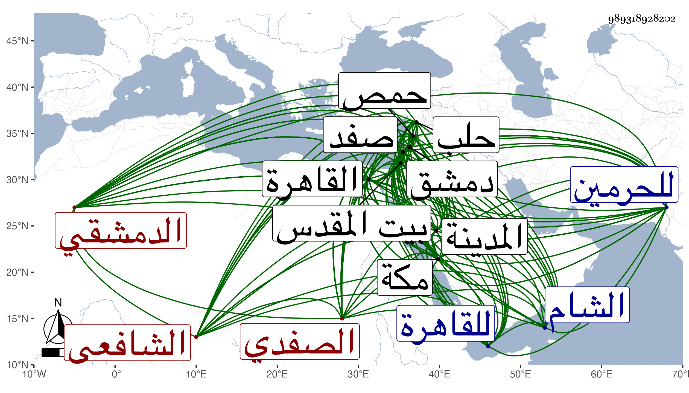

0902Sakhawi.DawLamic.ITO20230111-ara1.EIS1600.989318928202
Biography ID: 989318928202
111
محمد بن أحمد بن محمد بن أيوب المحب أبو الفضل بن الشهاب بن الشمس الصفدي الأصل الدمشقي الشافعي ويعرف بأبي الفضل بن الأمام لكون جده كان إماما ببعض جوامع صفد وهو بكنيته أشهر ولد في ثالث عشر شعبان سنة أربعين وثمانمائة بدمشق ونشأ بها فحفظ القرآن وصلى به وهو ابن عشر وخطب بجامع بني أمية والعمدة والعقيدة للغزالي والشيباني والشاطبية وألفية الحديث والنحو مع الملحة والمنهاج الفرعي والأصلي مع الورقات والرحبية في الفرائض وتلخيص المفتاح وغيرها ، وعرض على جماعة منهم ببلدة البلاطنسي والزين عبد الرحمن بن خليل والبرهان الباعوني وأخوه الجمال والبدر بن قاضي شهبة والتقى الأذرعي والشمس بن سعد والقوام الحنفي والنظام الحنبلي والشمس محمد بن موسى الحمصي السبكي وبالقاهرة في سنة خمس وخمسين الظاهر جقمق والبلقيني والمناوي والقلقشندي والمحلي والشنشي والكمال بن البارزي والخواص وزكريا وابن الديري وعبد السلام البغدادي والأقصرائي وابن الهمام والكافياجي والزين طاهر ، وكان في أثناء درسه لمحافيظه تولع بالفرائض والحساب بالمفتوح والقلم والجبر والمقابلة واستخراج المجهول وأخذ ذلك عن البرهان النووي والفخر بن الحاري بحيث برع فيه فلما دخل القاهرة قرأ مجموع الكلائي فيما كتب على العلم البلقيني وزكريا وأجازاه بالإفتاء والتدريس في الفرائض ومتعلقاته بعد امتحان أولهما له بقسمة مسئلة ، وأخذ القراءات ببلده جمعا وافرادا عن الشمس بن النجار وابن عمران حين قدمها عليهم والزين خطاب وبالقاهرة عن ابن أسد وجعفر والهيثمي وسمع عليه المسلسل بسورة الصف عن ابن الجزري وأخذ البخاري بقراءته عن ناصر الدين أبي الفضل محمد بن موسى بسط أبي بكر عبد الله الموصلي بسماعه له على السراج أبي بكر ابن أحمد بن أبي الفتح الدمشقي وعائشة ابنة ابن عبد الهادي وقراءة وسماعا عن الشمس اللولوي بروايته له عن الحافظين الجمال بن الشريحي وابن ناصر الدين بل سمع عليه مسلما وبقية الستة والموطأ والشفا ومسند مسدد وعدة مسلسلات وأجزاء وغير ذلك بل قرأ مسلما علي ابن خليل مع أربعي الصابوني وفضائل الشام للربعي وجزء النيل ومسند الشافعي والبعث وجزء ابن عرفة والبطاقة وسي والمسلسل بالقبض على اللحية وغير ذلك بل قرأ عليه البخاري أوجله ، ومما سمعه عليه وعلى البرهان الباعوني المسلسل بالأولية ومن ابن خليل لبس الخرقة وكذا من ناصر الدين سبط الموصلي كلاهما عن الشهاب بن الناصح وثانيهما عن جده أبي بكر الموصلي وأولهما عن الزين الخوافي في آخرين ببلده كالشمس بن هلال الأزدي والشهاب بن الشحام والنظام بن مفلح ، ومما سمعه عليه أجزاء مما يرويه عن ابن المحب والشمس الجرادقي وأكثر عنه مما رواه له عن الشرف بن الكويك وغيره وترافق مع ابن الشيخ يوسف الصفي في هؤلاء وكثيرين غيرهم وبالقاهرة كالعز الحنبلي وابنة خاله نشوان والشاوي والملتوتي وبالمدينة النبوية كأبي الفرج المراغي قرأ عليه الأربعين التي خرجها شيخنا لوالده وبمكة ككمالية ابنة المرجاني وزينب ابنة الشوبكي قرأ عليهما أشياء بحضرة النجم عمر بن فهد وهو ممن أخذ عنه أيضا وأجاز له فيما قال شيخنا ومن مكة أبو الفتح المراغي والتقي بن فهد والبرهان الزمزمي ومن حلب الشمس بن مقبل القيم ومن بيت المقدس التقي القلقشندي ومن بلده ابن ناصر الدين في آخرين باستدعاء ابن الصفي وغيره وفي الأول والأخير توقف ، وأخذ الفقه ببلده عن البلاطنسي وخطاب وابن الشاوي والبدر بن قاضي شهبة والشمس بن سعدو النجم بن قاضي عجلون وبالقاهرة عن المناوي ، ومما أخذه عنه القطعة التي كتبها على شرح البهجة لشيخه وعن زكريا والعروض عن الثاني وأصول الفقه عنه وعن الثالث والشهاب الزرعي وعنه أخذ أصول الذين بل أخذه بعد بالقاهرة عن الشرواني والعربية عن العلاء القابوني ثم الزرعي وبه انتفع في ذلك وفي كثير من العلوم كالمعاني والبيان والمنطق والصرف والحكمة وكذا أخذ المنطق عن التقي الحصني وكتب المنسوب على المحب بن المجروح والشمس الحبشي ، وتكرر دخوله للقاهرة وكذا للحرمين وبيت المقدس بل جاور في المساجد الثلاثة وتكررت له في جلها وأقرأ بها وبغيرها وتلقى عن شيخه خطاب تصديرا بالجامع الأموي وعن والده مشيخة التصوف بمدرسة الخواجا الشمس بن النحاس وكان قد باشرها نحو عشرين سنة يقرأ القرآن فإنه كان تلاه لأبي عمرو وابن كثير وعاصم على صدقة وابن اللبان بل اشتغل في الفقه وغيره ورافق في اشتغاله مشايخ الوقت ، وتكسب بالتجارة على طريقة جميلة حتى مات سنة ثمانين بدمشق عن نيف وثمانين سنة فانه كان ممن أسر وهو ابن سبع مع أمه في الفتنة التمرية من صفد إلى حمص ثم أنقذها الله حيث وجدت غفلة فاحتملته على عنقها إلى دمشق وقطنتها به ويومئذ حتى صار من أعيانها وكذا استقر به الخيضري في مشيخة مدرسته بداخل دمشق في القطانين تدريسا وتصوفا ثم أعرض عنها ، وكذا رغب عن مدرسة ابن النحاس لابن الواقف ، وكان قد اجتمع بي في القاهرة بعيد السبعين ثم لما كنت بمكة في سنة ثلاث وتشعين كتب إلي وهو متوعك :
| أليس انتساب العلم يقضي لأهله | بعود مريض منهم في التسقم |
| وإن لم يكن ود جرى قط بينهم | فحسبي هذا القول ياذا المعلم |
| فيا أيها الشمس يا شيخ وقته | ويا خادما علم الحديث المعظم |
| أبن لي جوابا شافيا عن مقالتي | وإلا فعذرا واضحا للتفهم |
| عليكم سلام الله في كل حالة | وإن عدتم أو لم تعودوا لمسقم |
فبادرت لعبادته معتذرا ورأيت من تواضعه وأدبه ورغبته في المذاكرة وتميزه في فنون العلم ما رغبني في محبته ثم لما أشرف على الشفاء زارني وكتب إلي بحاصل ما أثبته مما يحتاج لمراجعة في أشياء منه واستعار مني معجمي وغير ذلك من تعاليقي وانتقى منها كثيرا وكتب على كلها من نظمه ثناء بل تكرر حضوره في مجالسي والسماع علي والاستمداد من تآليفي وحصل نسخة من شرحي للألفية ومن القول البديع وغيره ووصفني غير مرة في مراسلاته وغيرها بشيخ الإسلام حافظ الوقت ، وهو من محاسن الزمان وأعلمني بكثير من أسماء تصانيفه وعرض على ولده منها تحفة العباد بما يجب عليهم في الإعتقاد نظما وشرع من أجله في جمع مؤلف في أحاديث الأحكام كان يعرض علي ما يكتبه منه ويراجعني في أشياء بعد أن عينت له مما يستمد منه مختصرات كثيرة ولا بأس به أن كمل ومما كتبه من نظمه في المسلسل :
| إن شئتم يرحكم من في السما | وأن تنالوا في الجنان أنعما |
| فأهل الأرض أوسعوهم رحمة | لعل أن يرحمكم من في السما |
ثم أنشدني ذلك من لفظه مع جوابه عن لغز أوله :
| يا عالم الإسلام أوضح لنا | جواب ما نلغزه بالدليل |
| فيك خلاف لخلاق الذي | فيه خلاف لخلاف الجميل |
| وغير من أنت سوى غيره | وغير من غيرك غير البخيل |
| لا زلتم أعظم شهب رمى | بثاقب الفهم مطل السبيل |
فقال :
| إن جوابا عن سؤال بدا | ملخصا مضمون لغز جليل |
| جوابه في نصف بيت أتي | أنت جميل وسواك البخيل |
| فالله رب العرش يبقى لنا | ملغزه فهو بهذا كفيل |
| لكي ننال العلم من فضله | ونقبس النور السنى الجليل |
| نظم أبي الفضل المحب الذي | يرجو بذا حسن الثواب الجزيل |
| مصليا على نبي الهدى | مسلما عليه من كل قيل |
إلى أن قال :
| والحمد لله على فضله | وحسبنا الله ونعم الوكيل |
